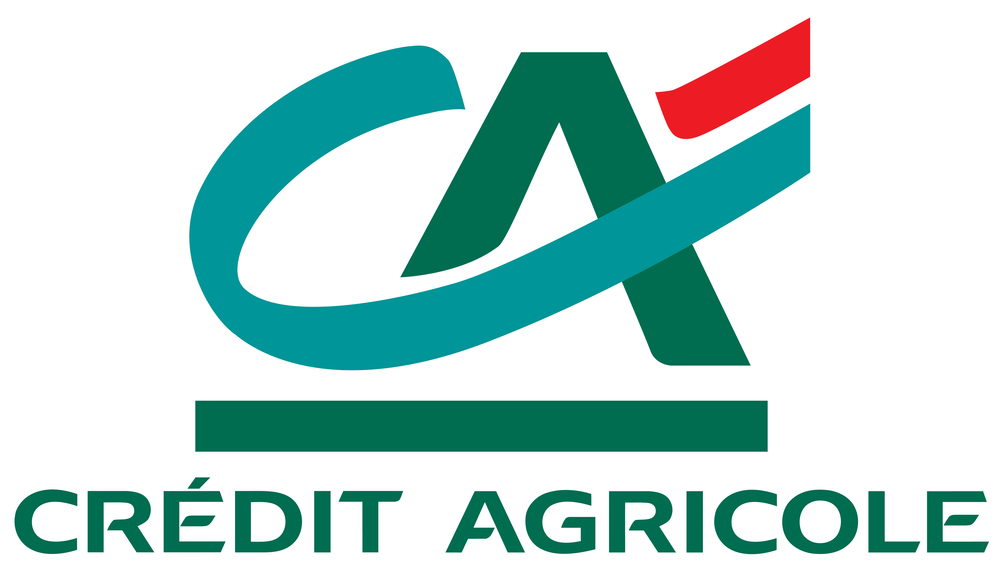

Stage & rapport · ESC Pau · 2022-2023
Crédit Agricole Pyrénées Gascogne — accueil & missions
Ce stage s’est déroulé au sein du réseau Crédit Agricole, sur le secteur Pau centre (agences Carnot et Lassence). J’y ai découvert l’accueil client, les opérations sensibles, la veille sur les risques et fraudes, un diagnostic (PESTEL, macro-environnement) et une mission de développement (bureautique, outils collaboratifs). Le contenu ci-dessous est structuré à partir de mon rapport de stage.
Présentation du groupe
Le Crédit Agricole, parfois surnommé la « banque verte » pour son ancrage historique dans le monde agricole, compte plus de 125 ans d’histoire et constitue aujourd’hui un grand réseau de banques coopératives et mutualistes. En France, le groupe s’appuie sur 39 caisses régionales.
Il est le premier financeur de l’économie française, parmi les plus grandes banques européennes et mondiales par les actifs, avec une présence internationale, des métiers variés (banque de proximité, assurance, gestion d’actifs, financement de projets, etc.) et des millions de clients.
Les deux agences (Pau centre)
J’ai alterné entre ces deux agences à forte densité de clientèle « cœur de Pau ».
Agence Carnot
Adresse : 31 rue Carnot, 64000 Pau
Horaires : lundi au vendredi, 9h–12h20 et 13h30–17h30.
Agence Lassence
Adresse : 7 rue Alfred de Lassence, 64000 Pau
Horaires : mardi au vendredi 9h–12h30 et 13h30–18h ; samedi 8h30–13h.
Les mardis et jeudis, réunions RAM (réunion d’agence) avec l’ensemble du « Grand Pau » de 8h10 à 9h, avant ouverture.
Déroulement du stage
Acculturation
Les premiers jours : observation à l’accueil pour comprendre les procédures, puis attribution d’un poste et de matériel.
Formation
Environ deux jours de e-learning (9h–17h30) avec en parallèle des tâches simples : aide clients sur les automates (retrait, solde, dépôts).
Planning opérationnel
Ensuite, un planning structuré avec des missions variées (accueil, Excel, mail, rendez-vous, prospection) selon les agences.
Exemples de journées (agence Carnot)
Matin · 10h–12h20
- Ouverture et accueil des premiers clients
- Création de fichiers Excel (base de données client exploitable)
- Réaffectation des tâches du jour pour les conseillers
- Répartition de la boîte mail de l’agence Pau centre
Après-midi · 13h–17h30
- Accueil et orientation
- Participation à des rendez-vous client en binôme avec un conseiller + compte rendu
- Mails pour clients avec fort mouvement créditeur (prospection client)
- Contrôle du stock cartes / chéquiers, préparation des envois courrier, fermeture
Risque, fraude & opportunité commerciale
Le rapport définit le risque comme une exposition à un danger potentiel ; en banque, il s’agit d’incertitude sur la valeur future d’un actif financier. La fraude bancaire recouvre des moyens illicites pour obtenir des fonds ou des informations ; à l’accueil, le rapport cite notamment le phishing (e-mail / SMS) et les fraude par virement. Une opportunité commerciale, c’est le moment où l’on identifie un besoin client pour proposer un produit ou service adapté.
7 opérations sensibles (face à face)
- Virements
- Commandes de monnaie
- Augmentation de découvert
- Délivrance carte et chéquier
- Augmentation de plafonds retrait / paiement
7 opérations sensibles (téléphone)
- Ajout de nouveaux bénéficiaires
- Envoi de code confidentiel
- Activation Sécuripass / Sécuricode
(Le rapport détaille 7 opérations par canal ; certaines listes sont regroupées ici pour la lisibilité.)
Exemples d’opportunités commerciales
- Déblocage d’épargne → ouverture de livret, épargne
- Chèque de banque (véhicule) → crédit, assurance auto, protection juridique
- Changement d’adresse → assurance habitation
- Naissance / enfant → ouverture de livret, prospect
- Opposition de carte → changement de gamme de carte, carte à débit différé selon profil
Points de contrôle (extraits du rapport)
Exemples de contrôles associés à des opérations sensibles à l’accueil.
| Opération | Points de contrôle |
|---|---|
| Virements | CNI, paiements en cours par carte, DCP |
| Commande de monnaie | CNI, recompte de monnaie, bordereau, cohérence stock |
| Augmentation de découvert | CNI, DCP, entrées/sorties, tenue de compte, alertes |
| Cartes & chéquiers | CNI, nom sur le support, premier salaire |
| Plafonds de paiement | CNI, solde et provenance des fonds, épargne domiciliée |
| Nouveau bénéficiaire | Identité, profil, sécurisation téléphonique (3 questions), DCP |
Diagnostic externe & interne
Le rapport présente une analyse PESTEL (politique, économique, social, technologique, écologique, légal), les opportunités et menaces du macro-environnement, puis un diagnostic interne.
Mission « développement » (proposition)
Dans le rapport, une suggestion de mission de développement porte sur la modernisation des outils bureautiques : constat d’outils parfois anciens (Microsoft Office 2016), d’une version antérieure de Microsoft Teams et d’une maîtrise inégale par les collaborateurs.
J’ai proposé une mise à jour de ces logiciels ; la demande n’a pas pu aboutir au niveau local, car la décision relève du siège (Serres-Castet), pas de l’agence.
Compétences & apprentissages
Relation client
Communication orientée client, accueil, gestion de plaintes, travail avec des conseillers en rendez-vous.
Outils & organisation
Excel (bases de données), messagerie d’agence, suivi de stock, participation aux RAM.
Risques & produits
Compréhension des opérations sensibles, vigilance fraude, opportunités commerciales.
Travail en équipe
Collaboration avec des profils différents (commercial, opérations, encadrement) — environnement dynamique, priorités et délais.
Source : rapport de stage ESC Pau — Bachelor 1 — année 2022-2023.